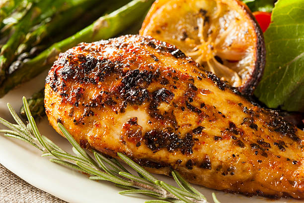

Grilled Lemon Herb Chicken

Grilled Lemon Herb Chicken is a succulent and zesty dish that elevates the natural flavors of chicken with a refreshing blend of herbs and citrus.
The boneless, skinless chicken breasts are marinated in a mixture of olive oil, fresh lemon juice, minced garlic, and a medley of dried oregano, thyme, and rosemary.
Ingredients
- 4 boneless, skinless chicken breasts
- 3 tablespoons olive oil
- 2 tablespoons fresh lemon juice
- 2 cloves garlic, minced
- 1 teaspoon dried oregano
- 1 teaspoon dried thyme
- 1 teaspoon dried rosemary
- Salt and pepper to taste
- Lemon wedges for serving (optional)
- Fresh parsley for garnish (optional)
Steps
- Marinate the Chicken:
- In a bowl, whisk together olive oil, lemon juice, minced garlic, oregano, thyme, rosemary, salt, and pepper.
- Place the chicken breasts in a resealable plastic bag or a shallow dish. Pour the marinade over the chicken, making sure it's well-coated.
- Seal the bag or cover the dish and refrigerate for at least 30 minutes, or ideally, marinate it for a few hours to allow the flavors to penetrate the chicken.
- Preheat your grill to medium-high heat.
- Remove the chicken from the marinade and let any excess drip off.
- Place the chicken breasts on the preheated grill. Grill each side for about 6-8 minutes or until the internal temperature reaches 165°F (74°C), and the chicken is no longer pink in the center.
- Cooking times may vary depending on the thickness of the chicken breasts.
- Rest and Serve:
- Once cooked, remove the chicken from the grill and let it rest for a few minutes.
- Optionally, garnish with fresh parsley and serve with lemon wedges on the side.